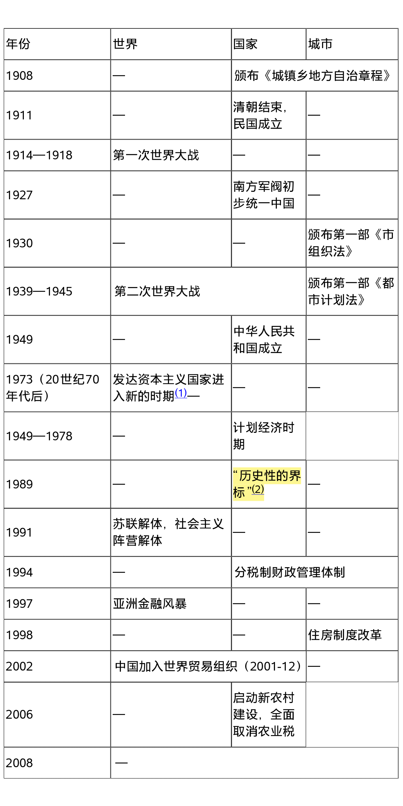

推荐杨宇振所著《资本空间化——资本积累、城镇化与空间生产》
笔者作为一个业余民科，常感中国学界在空间生产，空间权利和空间正义方面，仍具良好学术态度、道德，且具活跃度、批判性与普世心，这在当今世界不管哪个领域都实属可贵。因现实各种原因，他们的著作难以被推手推广，常常乏人问津，获利有限甚或要赔本。笔者并非学界人士，只是业余民科，但深感自己负有推荐义务，以使这些真挚的作者不那么孤冷，可以多得几位读者与之神交。
除向读者推荐杨宇振此书外，也推荐国内列斐伏尔的译著，由豆瓣 @豆瓣子玩 整理，详情请点击链接：
https://www.douban.com/group/topic/119854876/
另外，刘怀玉组织翻译的列斐伏尔两部重要著作《都市革命》和《空间的生产》即将出版，希望大家关注。
以下只说由杨宇振这本书引散开的感想吧。这本书确实相当精彩，笔者认为单独摘抄两三句话并无太大必要，还是需看读者统观全文。对本书的较好理解可能需要对马克思、恩格斯、列斐伏尔、哈维、卡斯特其中至少一人的基础了解。
杨宇振抱持冷静客观和实事求是的科学态度，心怀苍生，对百年中国的空间发展问题（囊括了相当的政经成分）进行了系统梳理，并一再提出自己的希望和批判。
作者学识广博，行文潇洒有力却不故弄玄虚，对古今中外城市、农村实践问题以及相关学术思想皆有涉及，但确实更多受大卫·哈维和曼纽尔·卡斯特影响，马克思主义的影响很鲜明。笔者认为在空间生产、正义这方面，马克思主义相较其他学说也确实一直显现出自身的强大和深刻。
本书着重通过权力，空间和资本三者对于城市化的影响，阐述空间生产问题，涉及全球、国家、地方与民众之间产生的各种矛盾和张力。
在细节方面也涉及城市美化运动，大学城的具体空间生产事例和对学术教育界的批判。二十世纪三十年代城市化争论相当精彩，原来割据军阀也并非一介武夫，针对城市农村矛盾做出过一系列举措，虽然这些举措不成功；而陈序经在此时对于优先工业发展必要性和对于农村建设改善的悲观也是近百年来不变的基调。本书所选择的照片常常具较强社会意义，制作的图表高度浓缩了相当多的知识点，就连封面色调设计也确实下了功夫。
笔者认为本书最大的优点在于系统阐述了中国城市资本化发展的历史，以及农村在其中的变动，涉及城市化起点及至今的数个重大转折点。截取本书一张图片如下：

本书也存缺陷。除本书后记中自述的缺陷外，本书出版于2016年，由作者过去20篇论文汇编而成，论述基本上截止至十二五期间。因时间限制，对新型城镇化规划还未够深入；虽然作者文中和参考文献均提及列斐伏尔，却无列斐伏尔那些尖锐直接和深刻的内容，不知是否如“研究者不发表等于死亡”的现实考虑；基于现实原因，一些批评也是隐含略提而不展开，不能更为直接地说透辩明，这也是现代性学术界的顽疾，需读者体谅。
最主要的缺陷，在于本书无法提出较好的解决方案，如同哈维或其他人一样，只能寄希望于某些微观面的改变，有时甚至是一种空想希望。这并非是作者或哈维等人能力问题，而是时代的社会限制使优秀全面的解决方案成为不可能。以马克思主义为例更能说明这一缺陷。马克思主义在起始和至今的发展过程中，就深刻揭示和批判了资本主义赤裸裸的血淋淋一面。但是马克思主义深刻认识现状的另一面却无法给出相应的宏大解决方案（马克思社会主义的非科学和反历史唯物的乌托邦性质可见我对苏俄的文章），马克思的历史唯物主义本身就要求尊重先进生产力和生产关系。资本主义面对诸多矛盾，周期性危机，但仍是当代最具先进的生产力、生产关系。所有真诚前行的人，无法不面对这种瘸腿——长腿是批判，短腿是开拓建设，这是近二百年来的悲剧，但有志者必将负重前行……